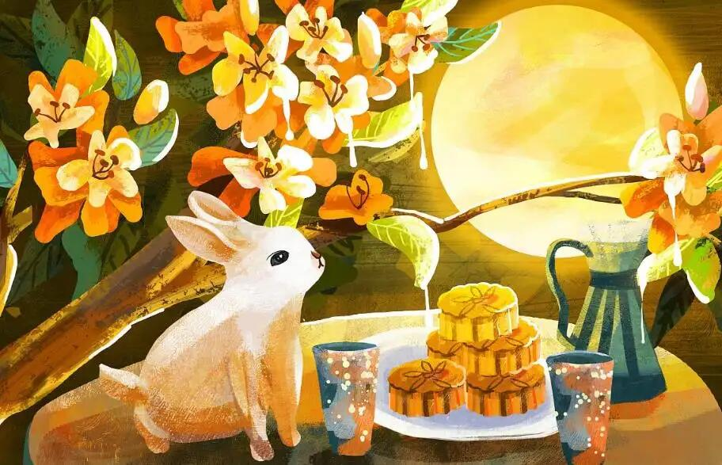

祭月，在我国是一种十分古老的习俗，实际上是古人对“月神”的一种崇拜活动。在古代有“秋暮夕月”的习俗。夕月，即拜祭月神。自古以来，在广东部分地区，人们都有在中秋晚上拜祭月神（拜月娘、拜月光）的习俗。拜月，设大香案，摆上月饼、西瓜、苹果、红枣、李子、葡萄等祭品。在月下，将“月神”牌位放在月亮的那个方向，红烛高燃，全家人依次拜祭月亮，祈求福佑。祭月赏月，托月追思，表达了人们的美好祝愿。祭月作为中秋节重要的祭礼之一，从古代延续至今，逐渐演化为民间的赏月、颂月活动，同时也成为现代人渴望团聚、寄托对生活美好愿望的主要形态。

更多习俗点击查看详情